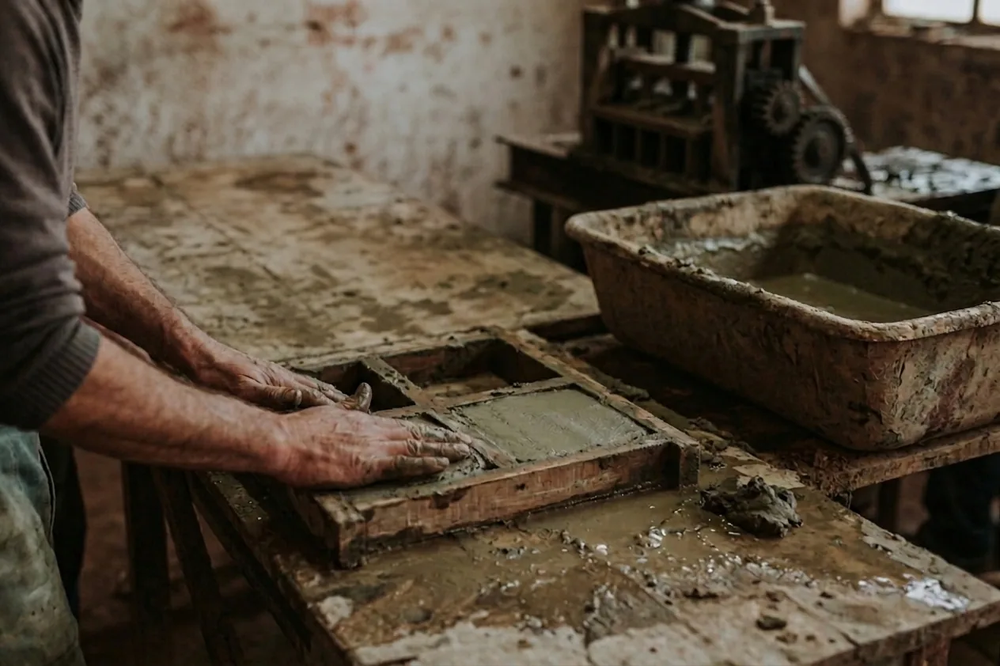

Čtvercová
- 160 × 160mm
- 180 × 180mm
- 200 × 200mm
- 240 × 240mm
Půdovky · historická dlažba · cihelná dlažba
Tradiční ruční ražení cihlářského jílu do forem dodává každé dlaždici jedinečný charakter. Výsledná plocha získává autentický, rustikální vzhled, který je ideální pro historické objekty, vinné sklepy, chalupy i stylové restaurace. Každý kus je originál, což vytváří nezaměnitelnou atmosféru a podtrhuje řemeslný původ materiálu.
Pálená hlína bez umělých příměsí, která si dlouhodobě uchovává svou barevnost.
Ražení jílu do forem podle tradičního postupu, kdy z každé dlaždice vzniká originál s autentickým vzhledem.
Poradíme s výběrem formátu, potřebné chemie i vzorováním pro váš projekt.
Desítky metrů čtverečních máme ihned k odběru na našich skladech v Kostelci nad Orlicí a Brandýse nad Labem.
O materiálu
Ruční cihlová dlažba vzniká tradiční technikou ražení (tlučení) cihlářského jílu do forem, díky níž je každý kus originál. Díky tomu výsledná plocha získává nezaměnitelný rustikální vzhled, kterého nelze dosáhnout průmyslovou výrobou.
Ruční cihlovou dlažbu, dříve označovanou také jako půdovky, nejčastěji dodáváme rekonstrukce historických objektů — zámků, kostelů, městských památek, stodol, vinných sklepů. V poslední době ale přibývá projektů novostaveb, u kterých dokáže vytvořit atmosféru skutečně poctivého, tradičního prostoru.
Koupit dlažbu
Ruční cihlovou dlažbu nabízíme v základních tvarech ve tvaru čtverec, obdélník a šestiúhelník v režném odstínu. Případné barevné úpravy lze docílit povrchovou úpravou.
Další formáty je možné vyrobit na zakázku. V případě individuální zakázky nám neváhejte napsat více o vašem projektu.
Kontakt
Obraťte se na obchodně-technického poradce Klinker Centra.
Obchodně-techničtí poradci
E-mail: info@klinkercentrum.cz
Po: 7:00–17:00
Út: 7:00–16:00
St: 7:00–17:00
Čt: 7:00–16:00
Pá: 7:00–16:00
Po: 7:30–17:00
Út: 7:30–17:00
St: 7:30–17:00
Čt: 7:30–17:00
Pá: 7:30–17:00